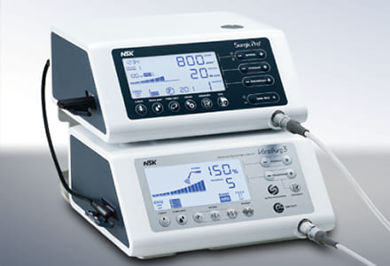

負担のない先進的なインプラント治療
インプラント治療とは、歯を失った際にその機能を回復するための治療です。顎の骨にインプラントを埋め込み、その上に被せ物を装着するため、失った歯の周囲に負担をかけずに治療を行うことができます。また、インプラント治療を行うことで残っている歯の負担も分散してくれるため、入れ歯やブリッジと比べて患者様の歯の健康状態が長持ちする治療法です。
藤沢の歯医者、玉木歯科医院では的確な診査・診断後、低侵襲で患者様に負担の少ないインプラント治療をご提供いたします。
日本歯周病学会(日本歯周病学会歯周病専門医・指導医)がインプラント治療を行う意義
インプラント治療は、あごの骨に人工歯根を埋め込む手術が必要になるため、従来、口腔外科の医師が治療を担当してきました。しかし、歯周病患者に行ったインプラント治療の成功率が通常よりも低くなることが分かった現代では、インプラント治療の多くを歯周病専門医が担当しています。
さらに、審美的なインプラント治療を行うためには歯周形成外科の技術が必要であったり、骨が不足している場合に歯周組織再生療法の技術を応用し骨再生の治療を行う必要があるため、歯周病の専門的な知識が治療成功の鍵になります。つまり、歯周病を熟知している歯科医師がカウンセリングからインプラント治療の治療計画、手術、術後のメインテナンスまで一貫して行うことで、より良い口腔内環境へ改善することができるのです。
インプラント治療反対派だった私がインプラント治療を行う理由
以前のインプラントは、骨とインプラントが結合するまで時間がかかり、術前シミュレーションソフトやコンピュータガイドシステムも現在ほど発達していなかったため、確実性に欠ける一面もありました。
歯科医師免許を取得した当初は、「抜歯は歯科医師の敗北である」という自分の考えもあり、今考えると無理矢理、歯を残そうとしていたように思います。たくさんの歯を削りたくさんの歯を連結固定していたため、当然、治療期間は長く費用も高額となり、再治療が必要な際には、全てやり直さなければならないケースもありました。
しかし、現在は技術（インプラント体の表面性状やコンピュータガイドシステム）が進歩しており、治療期間・費用の面、再治療が必要になった場合の煩雑さが無く他の歯に負担をかけずに治療出来ることを考えると、現代のインプラントは非常に優れた治療オプションです。もちろん、可能な限り歯を残す治療（歯周病治療や根管治療など）を行ったうえで、患者様が将来もしっかりと噛めるお口を保てるように、そのひとつの選択肢としてインプラント治療を行っています。
インプラント治療におけるポイント
診査・診断の重要性
どの治療にも当てはまりますが、インプラント治療は特に、術前の診査・診断がとても重要な治療です。理想的な位置にインプラントを埋入できるよう、術前にインプラント専用シミュレーションソフトで十分にシミュレーションを行い、手術時にコンピュータガイドシステムを用いることで、治療がスピーディーに進みます。そのため、従来であれば必要であった複雑な術前処置や追加処置が不要となり、手術時間や治療期間の短縮も可能です。またコンピュータガイドシステムを用いる利点として、手術時のヒューマンエラーが防げるため治療自体の成功率も格段に向上します。
幅広い症例に対応できること
インプラントは失った歯を取り戻す唯一の治療法ですが、顎の骨が少ない方など、インプラント治療ができないと断られてしまう方も多くいらっしゃいます。そういった方たちの想いに応えるためにも、様々な症例に対応できる環境を整えることが重要です。例えば、当院で行っているショートインプラントやナローインプラントは、骨を造る・増やすという大がかりな骨造成も不要となり、低侵襲な治療が可能となっています。
玉木歯科医院のインプラント治療の特徴
安全性が高く、身体的負担の少ない治療

当院では、安全面の配慮として、理想的かつ正確な位置と角度でインプラントを埋めることを可能にするコンピュータガイドシステム（SIMPLANT）、またピエゾサージェリーという最新の超音波骨切削器具を導入し、最小限の身体的負担で治療できるよう努めています。
歯科用3ＤＣＴで血管、神経の位置を把握して偶発症を防ぎ、さらに全ての治療ケースにＣＴデータを基にした術前シミュレーションからコンピュータガイドシステムを作製し理想的な3次元的ポジションにインプラントを埋入することが可能です。
世界シェア1位のストローマンのインプラントを使用
ストローマンインプラントは、世界70ヶ国以上、500万人以上の患者が利用しており、世界シェア第一位という最も高い評価を得ているスイスのインプラントメーカーです。患者様のQOL（生活の質）向上のため、50年以上の長期的な臨床研究を重ね、優れた特性と長期的な安全性を示すエビデンスに基づいた製品を提供しています。徹底した品質管理のもとで製造をすることで、高い品質を維持しています。
リスクを回避するために、日本歯周病学会専門医・指導医が対応
歯を失った患者様は、実は歯周病を患っている方が多く、お口の中の細菌の数が多い傾向にあります。そのため歯周病治療を行わずにインプラント治療を進めると、歯周病原細菌が原因でインプラント周囲炎という病気を後々併発し、せっかく入れたインプラントが抜け落ちてしまうことがあります。
当院では、学会でインプラント治療の発表を多数行い､高い評価を得ている日本歯周病学会専門医・指導医が治療を担当いたします。今のお口の状況から､その後の歯周病リスクを考えた上で､インプラント治療ができるか正確な診査・診断を行っています。そして､インプラント治療後も､継続して徹底的にリスクコントロールを行い､長期的に良好な状態を保てるようサポートします。
治療例：前歯部欠損にインプラントを用いて補綴処置を行ったケース
| 治療前 | 治療後 | |
|---|---|---|
 |
||
| 患者様からの主訴 | 37歳男性。抜けた前歯に歯を入れたいとのことでご来院。 |
|---|---|
| 治療方針 | 欠損補綴には種々の方法があるが周囲の歯に負担がかからなくて済むこと､仮に再治療が必要になった際の煩雑さを避けることからインプラントを用いた欠損補綴を行うこととした。 |
| 治療期間 | 1年 |
| 治療費（税込） | 264万円（インプラント4本分：レイヤリングジルコニアクラウン+ジルコニアアバットメント、プロビジョナルレストレーション、歯周形成外科代込み） |
| 治療におけるリスク | 特になし |
トラブル事前回避のチェックポイント
インプラント治療を受ける患者様には、その歯科医院で次の3点が行われているかを十分考慮して治療を開始するべきと言われております。（日本顎顔面インプラント学会推奨）
治療費が安すぎませんか？
インプラントは患者様の体の中に埋め込む治療なので、CT、コンピュータシミュレーションなどの精密検査、良質なインプラントの使用、これら全てのステップで妥協してはいけません。安すぎる治療費はいずれかの大事な要素が省かれていると考えられます。
口腔内検査、歯周病治療を
行っていますか？
インプラントは歯周病原細菌にとても弱く、歯周病原細菌に感染してしまうとインプラント周囲炎となり、抜け落ちる可能性もあります。歯周病治療と唾液の検査は必ず行うべきです。
手術を行う先生はきちんと
説明してくれていますか？
治療の説明をしてくれる先生と実際に手術を行う先生が別のケースがあります。 インプラントは先進的な医療ですので、手術を行う先生からも直接手術方法とそのリスクについて説明を受けなくてはなりません。
インプラントに関する学会発表
【2017年5月】
広汎型中等度および限局型重度慢性歯周炎患者の口腔機能回復治療にインプラント補綴を用いた包括的治療を行った一症例. 日本歯周病学会学術大会プログラムおよび講演抄録集第59巻：157,2017
【2019年11月】
歯周炎患者の欠損補綴にインプラント治療を用いて包括的診療を行った一症例 日本歯科審美学会第30回学術大会
前歯部インプラントにロール法を用いて低侵襲に審美的改善を図った一症例 . 日本歯科審美学会第30回学術大会
料金表
| 術前シミュレーション | ¥22,000～¥55,000 |
|---|---|
| サージカルガイド | ¥55,000～ 1歯増えるごとにプラス6,600円加算 |
| インプラント一次手術 | ¥275,000～¥385,000 |
| インプラント二次手術 | ¥110,000～¥220,000 |
| プロビジョナルレストレーション | ¥33,000～¥55,000 |
| 上部構造体 | ¥165,000～¥275,000 |
| GBR（骨再生誘導療法） | ¥110,000～¥275,000 |
| サイナスリフト（上顎洞底挙上術） | ¥220,000～¥385,000 |
| ソケットリフト | ¥110,000～¥165,000 |
| 遊離歯肉移植術 | ¥110,000～¥165,000 |
| 結合組織移植術 | ¥110,000～¥165,000 |
| リッジプリザべーション | ¥55,000～¥110,000 |
| 静脈内鎮静法 | ¥88,000～¥110,000（麻酔の時間によって変わります） |
※すべて税込
※上記、ご料金につきましては患者様の症状により加算がつくものがあります。
その場合は、しっかりご説明させていただきますので宜しくお願いします。
✼ インプラント治療のメリット
自分の歯のようによく噛める、違和感が他の治療法より少ない
✼ インプラント治療のデメリット
服用している薬によっては処置できない場合がある
✼ インプラント治療の注意点
メイテナンスを怠ると天然歯と同様に状態が悪化することがあります。